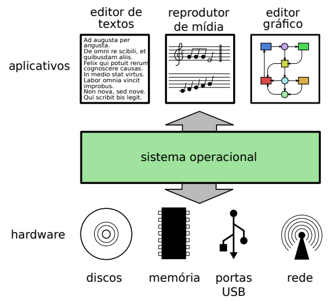

1. Sistema de computação: hardware, software e sistema operacional
Um sistema de computação é formado basicamente por hardware e software. O hardware corresponde aos componentes físicos: processador, memória, portas de entrada e saída, discos, teclado, mouse, unidades de armazenamento e demais periféricos. O software corresponde aos programas que executam tarefas sobre esse hardware.
Os programas de aplicação são os programas usados diretamente pelo usuário, como editores de texto, navegadores de Internet, reprodutores de mídia, jogos e editores gráficos. Esses programas existem para resolver problemas ou executar atividades úteis para quem usa o computador.
Ideia central
Entre os aplicativos e o hardware existe uma camada de software chamada Sistema Operacional. Ela torna o uso do computador mais viável, pois oculta detalhes complexos do hardware e organiza o uso dos recursos disponíveis.
O sistema operacional é uma estrutura ampla. Ele incorpora elementos de baixo nível, como drivers de dispositivos e controle da memória física, e elementos de nível mais alto, como programas utilitários, interface gráfica e serviços usados pelas aplicações.

Como ler essa figura
Os aplicativos não precisam controlar diretamente os discos, a memória, as portas USB ou a rede. Eles fazem pedidos ao sistema operacional, e o sistema operacional se comunica com o hardware. Esse modelo reduz a complexidade para quem desenvolve e para quem usa programas.
2. Objetivos de um sistema operacional
Existe uma grande distância entre os circuitos eletrônicos do computador e os programas aplicativos. O hardware é complexo, usa interfaces de baixo nível e pode variar muito conforme a tecnologia empregada. Um disco IDE, um disco SCSI, uma unidade de CD, um pendrive e uma placa de rede podem exigir formas diferentes de comunicação em baixo nível.
Sem um sistema operacional, cada programa teria que conhecer detalhes específicos de cada dispositivo. Isso tornaria o desenvolvimento de aplicações muito mais difícil e criaria forte dependência entre programa e hardware.
Abstração
O sistema operacional apresenta uma forma mais simples e uniforme de acesso aos recursos físicos.
Gerência
O sistema operacional organiza o uso dos recursos quando vários programas ou usuários precisam deles ao mesmo tempo.
Assim, os dois objetivos básicos de um sistema operacional podem ser entendidos por duas palavras-chave: abstração e gerência.
3. Abstração de recursos
Acessar diretamente os recursos de hardware pode ser uma tarefa complexa. Cada dispositivo possui características próprias, comandos específicos e formas distintas de funcionamento. Por isso, o sistema operacional cria interfaces abstratas para que os programas não precisem lidar com todos os detalhes internos.
Exemplo: abrir um arquivo em disco
Para um usuário, abrir um arquivo parece simples. Para o sistema, porém, a operação envolve várias etapas: validar parâmetros, verificar se o disco está disponível, acionar o dispositivo, localizar diretórios, encontrar o bloco inicial do arquivo e copiar os dados para a memória.
- Verificar se os parâmetros informados estão corretos, como nome do arquivo, identificador do disco e área de memória usada na leitura.
- Confirmar se o disco está disponível para uso.
- Preparar o dispositivo físico, como motor, mídia e mecanismo de leitura.
- Localizar a área do disco onde ficam as informações de diretório.
- Ler a estrutura de diretórios e localizar o arquivo ou subdiretório solicitado.
- Ir até o bloco inicial do arquivo.
- Ler os dados e colocá-los em uma área de memória.
Em vez de exigir que cada aplicativo implemente essas etapas, o sistema operacional fornece operações mais simples, como open, read e close. O programador trabalha com a ideia de arquivo, e não com os detalhes elétricos, mecânicos e lógicos do disco.
3.1 Por que a abstração é importante?
Interface mais simples
Os aplicativos usam operações compreensíveis, como abrir, ler, escrever e fechar arquivos.
Independência do hardware
Um editor de textos não precisa ser reescrito porque o computador usa outro tipo de disco ou dispositivo.
Padronização
Dispositivos diferentes podem ser usados por meio de uma interface semelhante, como arquivos e diretórios.
Exemplo em linguagem simples
Quando um programa salva um documento, ele não precisa saber se o arquivo será gravado em HD, SSD, pendrive, cartão de memória ou unidade de rede. O sistema operacional transforma esses dispositivos diferentes em uma forma de acesso mais uniforme.
4. Gerência de recursos
Os programas aplicativos usam o hardware para atingir seus objetivos: ler e armazenar dados, editar documentos, imprimir arquivos, navegar na Internet, tocar música, executar cálculos e comunicar-se pela rede. Em um sistema com várias atividades simultâneas, podem surgir conflitos pelo uso dos mesmos recursos.
Cabe ao sistema operacional definir políticas para gerenciar o uso do hardware, distribuir recursos entre aplicações e resolver disputas. Sem esse controle, um programa poderia monopolizar o processador, ocupar memória demais ou atrapalhar o funcionamento de outros programas.
Processador
Normalmente existem menos processadores que tarefas em execução. O sistema operacional divide o tempo de CPU entre elas.
Memória RAM
A memória precisa ser distribuída entre aplicações, mantendo isolamento e evitando interferência indevida.
Impressora
É um recurso que deve ser usado por um trabalho de cada vez. O sistema cria uma fila de impressão.
Rede e servidores
O sistema deve impedir que poucos processos ou usuários consumam todos os recursos disponíveis.
Definição prática
Gerenciar recursos significa controlar quem usa cada recurso, por quanto tempo, com qual prioridade e sob quais regras de segurança.
5. Funcionalidades de um sistema operacional
Para cumprir os objetivos de abstração e gerência, o sistema operacional atua em várias frentes. Cada recurso do computador tem características próprias e exige mecanismos específicos de controle.
5.1 Gerência do processador
Também chamada de gerência de processos, tarefas ou atividades, distribui a capacidade de processamento entre as aplicações. O objetivo é impedir que uma aplicação monopolize a CPU e permitir que várias tarefas avancem de forma organizada.
O sistema operacional cria a impressão de que cada tarefa possui um processador próprio. Essa ilusão facilita a construção de programas e melhora a interatividade do sistema. Também fazem parte dessa área os mecanismos de sincronização e comunicação entre tarefas.
5.2 Gerência de memória
Tem como objetivo fornecer a cada aplicação uma área de memória própria, independente e isolada das demais. Esse isolamento melhora a estabilidade e a segurança, pois uma aplicação com erro não deve sobrescrever os dados de outra aplicação ou do próprio sistema operacional.
Quando a memória RAM disponível não é suficiente, o sistema operacional pode usar armazenamento secundário, como o disco, para ampliar de forma transparente a memória percebida pelas aplicações.
Memória virtual
Uma abstração importante da gerência de memória é a memória virtual. Com ela, os endereços vistos por cada aplicação não precisam corresponder diretamente aos endereços físicos da RAM. Isso permite carregar programas em diferentes posições da memória sem exigir que o programador controle esses detalhes.
5.3 Gerência de dispositivos
Cada periférico tem suas particularidades. Interagir com uma placa de rede não é igual a interagir com um disco SATA, uma impressora ou um dispositivo USB. A gerência de dispositivos implementa essa comunicação por meio de drivers e modelos abstratos.
Dispositivos parecidos podem ser agrupados sob uma interface comum. Por exemplo, vários dispositivos de armazenamento podem ser tratados como conjuntos de blocos de dados, mesmo que internamente funcionem de forma diferente.
5.4 Gerência de arquivos
Construída sobre a gerência de dispositivos, cria os conceitos de arquivos e diretórios e define as operações que podem ser realizadas sobre eles. Arquivos e diretórios são abstrações muito importantes porque permitem organizar dados sem lidar diretamente com setores, blocos ou comandos de hardware.
Em alguns sistemas, o conceito de arquivo é usado de modo ainda mais amplo. Conexões de rede, informações internas do sistema e outros recursos podem ser apresentados como arquivos ou descritores de arquivos.
5.5 Gerência de proteção
Em computadores conectados em rede ou compartilhados por vários usuários, é necessário controlar quem pode acessar cada recurso. A gerência de proteção define usuários, grupos, permissões, autenticação, autorização e registro de uso dos recursos.
Esse controle protege arquivos, processos, áreas de memória, conexões de rede e outros componentes contra acessos indevidos.
6. Política e mecanismo
Uma regra importante na construção de sistemas operacionais é separar política e mecanismo.
| Conceito | Significado | Exemplo |
|---|---|---|
| Política | Decisão de nível mais alto sobre o que deve ser feito. | Determinar quanta memória cada aplicação ativa deve receber. |
| Mecanismo | Procedimento de baixo nível usado para executar a decisão. | Atribuir ou retirar páginas de memória de um processo. |
Essa separação torna o sistema mais flexível. É possível alterar uma política sem reescrever todo o código que se comunica diretamente com o hardware.
7. Categorias de sistemas operacionais
Os sistemas operacionais podem ser classificados de várias formas. Um mesmo sistema pode pertencer a mais de uma categoria, dependendo de suas características e objetivos.
Batch ou de lote
Executa tarefas organizadas em fila, sem interação direta contínua com o usuário. O conceito ainda aparece em processamentos automáticos e rotinas em lote.
De rede
Permite usar recursos localizados em outros computadores, como arquivos, impressoras e serviços compartilhados.
Distribuído
Recursos de vários computadores são apresentados de forma transparente. O usuário não precisa saber onde a aplicação executa ou onde os dados estão.
Multiusuário
Identifica usuários e proprietários de recursos, impondo regras de acesso para segurança e organização.
Servidor
Gerencia grandes volumes de recursos, usuários e serviços, geralmente com suporte a rede e múltiplos acessos simultâneos.
Desktop
Voltado ao uso doméstico ou corporativo comum, com interface gráfica, interatividade e suporte a aplicativos diversos.
Móvel
Usado em smartphones e tablets. Prioriza bateria, conectividade, sensores e interação por toque.
Embarcado
Executa em equipamentos com poucos recursos, como eletrodomésticos, controladores automotivos e dispositivos dedicados.
Tempo real
Tem comportamento temporal previsível. O ponto principal não é ser simplesmente rápido, mas responder dentro de prazos conhecidos.
Tempo real: cuidado com a interpretação
Um sistema operacional de tempo real não é definido apenas por rapidez. Sua característica essencial é a previsibilidade. Em sistemas críticos, perder um prazo pode causar consequências graves. Em sistemas não críticos, a perda de prazo degrada o serviço, como falhas perceptíveis em reprodução de mídia.
8. Breve histórico dos sistemas operacionais
Os primeiros computadores, no final dos anos 1940, não possuíam sistemas operacionais como os atuais. Os programas executavam diretamente sobre o hardware, e o programador precisava controlar muitos detalhes de entrada, saída, memória e processamento.
| Período | Marco |
|---|---|
| Anos 1940 | Programas executavam sozinhos e controlavam diretamente o computador. |
| Anos 1950 | Surgem bibliotecas de sistema e programas monitores para auxiliar carga e execução. |
| 1961 | CTSS, um dos primeiros sistemas com compartilhamento de tempo. |
| 1965 | IBM OS/360 e projeto Multics, com forte influência na evolução posterior. |
| 1969 | Criação do UNIX nos Bell Labs. |
| 1981 | Microsoft lança o MS-DOS. |
| 1984–1985 | Mac OS 1.0 e primeiras versões do Microsoft Windows popularizam interfaces gráficas. |
| 1987 | Minix é desenvolvido como sistema didático compatível com ideias do UNIX. |
| 1991 | Linus Torvalds inicia o desenvolvimento do Linux. |
| 1993–2007 | Windows NT, sistemas BSD abertos, sistemas móveis e Android ampliam a diversidade de SOs. |
Esse histórico mostra apenas alguns marcos. A área de sistemas operacionais também foi influenciada por vários projetos acadêmicos e industriais que trouxeram ideias importantes, como micro-núcleos, virtualização, sistemas distribuídos e arquiteturas especializadas.
9. Exercícios
Questões do capítulo
- Quais os dois principais objetivos de um sistema operacional?
- Por que a abstração de recursos é importante para os desenvolvedores de aplicações? Ela tem alguma utilidade para os desenvolvedores do próprio sistema operacional?
- A gerência de tarefas permite compartilhar o processador, executando mais de uma aplicação ao mesmo tempo. Identifique as principais vantagens trazidas por essa funcionalidade e os desafios a resolver para implementá-la.
- O que caracteriza um sistema operacional de tempo real? Quais as duas classificações de sistemas operacionais de tempo real e suas diferenças?
- Relacione as afirmações aos respectivos tipos de sistemas operacionais: distribuído (D), multiusuário (M), desktop (K), servidor (S), embarcado (E) ou de tempo real (T).
- Sobre as afirmações relativas aos diversos tipos de sistemas operacionais, indique quais são incorretas, justificando sua resposta.
Atividade de leitura orientada
- Explique, com suas palavras, por que o sistema operacional fica entre os aplicativos e o hardware.
- Dê um exemplo de recurso que precisa ser gerenciado para evitar conflito entre programas.
- Escolha três categorias de sistemas operacionais e cite uma característica de cada uma.
- Explique a diferença entre política e mecanismo usando um exemplo diferente dos apresentados no texto.
10. Créditos e referência
Material organizado didaticamente a partir do Capítulo 1 do livro Sistemas Operacionais: Conceitos e Mecanismos.
Referência: MAZIERO, Carlos. Sistemas Operacionais: Conceitos e Mecanismos. Editora da UFPR, 2019.
A página oficial do livro informa que ele foi concebido como livro aberto, apresenta a referência bibliográfica da obra e informa sua licença Creative Commons.
Este arquivo reorganiza o conteúdo para estudo, preservando os conceitos do capítulo e usando estrutura didática para leitura em sala.